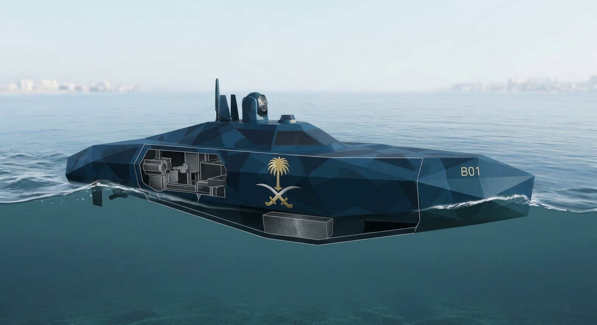
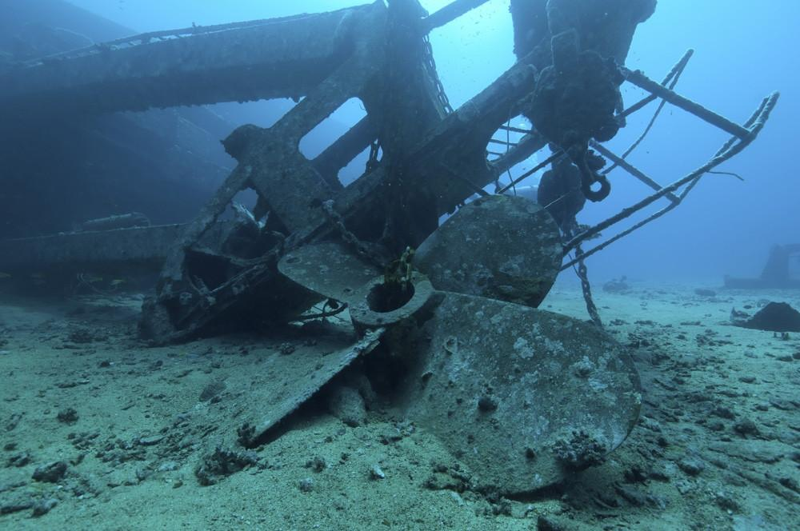

USV B01
Autonomous Unmanned Surface Vehicle (USV)
المركبة السطحية غير المأهولة B01
B01 is an autonomous surface vehicle concept designed to survey maritime environments, detect underwater objects and near-surface hazards, assess potential risks, and provide explainable, risk-prioritized information to support maritime safety and inspection decisions. It surveys the area autonomously in a cross-hatch grid and is designed to support detection of underwater objects and hazards with multibeam and side-scan sonar, without putting crews in danger.
B01 مركبة سطحية ذاتية التشغيل في مرحلة المفهوم، صُمِّمت لمسح البيئات البحرية، وكشف الأجسام تحت الماء والمخاطر القريبة من السطح، وتقييم المخاطر المحتملة، وتقديم معلومات قابلة للتفسير ومرتّبة حسب الخطورة لدعم قرارات السلامة البحرية والفحص. تمسح المنطقة ذاتيًا بمسحٍ شبكي متقاطع، وهي مصمَّمة لدعم كشف الأجسام والمخاطر تحت الماء بالسونار متعدد الحزم وسونار المسح الجانبي، دون تعريض الأرواح للخطر.
Implemented: the software simulation on this site. Proposed: the B01 vessel and its sensors, computing, links, power and propulsion, not yet built or tested.

- Survey depth band
- Approximately 0–60 m (proposed). Designed to support surveys in shallow-water and deeper coastal environments. The achievable detection depth, minimum detection range, and effective coverage depend on the selected sensor models, installation geometry, water conditions, and field validation.
- Sensing
- Multibeam and side-scan sonar and water-column profiling, with SVP sound-speed correction, RTK GNSS, IMU, an EO/IR camera and radar + AIS (proposed)
- Output
- Risk-assessed targets with an explained decision and a recommended action
About USV B01
B01 is an autonomous surface vehicle concept designed to survey maritime environments, detect underwater objects and near-surface hazards, assess potential risks, and provide explainable, risk-prioritized information to support maritime safety and inspection decisions. It is based on the team's own B01 hull design and works at the water surface: it surveys an area autonomously, explains each decision and tells the operator which targets to inspect first, without putting people in danger.
The problem
Traditional maritime surveys and mine-hunting operations rely on large, crewed vessels. They put personnel at risk and cost a great deal to run, and in shallow coastal waters they raise many false alarms: marine life, natural features, wrecks, debris and old ordnance lie side by side, and most of these objects are not hazards.
Different sensing methods provide different types of information about underwater targets. Acoustic sensing can remain useful in poor visibility, while target interpretation still requires analysis of multiple characteristics. No single sensing source answers the question “what is this object, and is it a hazard?” on its own.
What the system does
USV B01 surveys the area autonomously with a grid (cross-hatch) method: a complete set of parallel survey lines, then a second complete set at right angles over the same area. Hull-mounted multibeam and side-scan sonar and water-column profiling look for underwater targets, and a sound velocity profiler (SVP) measures the sound-speed profile used to correct the acoustic measurements; RTK GNSS and the IMU give each target its position, while the navigation radar, AIS and an EO/IR camera watch the surface. Each target is analysed, classified and given a risk level, a risk type and a decision with an explanation. When the evidence is not enough, the system reports the object as unknown and asks for verification instead of forcing a class.
Targets are marked on the survey map, and only encrypted, risk-prioritized alerts are sent to the operator over RF (UHF), 4G and satellite links (proposed).

Survey environment
B01 works at the water surface, and its sonar looks down through the water column to the seabed. Proposed survey depth: approximately 0–60 m. Designed to support surveys in shallow-water and deeper coastal environments. The achievable detection depth, minimum detection range, and effective coverage depend on the selected sensor models, installation geometry, water conditions, and field validation.
How it works
From the water to the operator: USV B01 senses the area below it, detects targets, classifies them, assesses their potential risk, explains each decision and recommends an action.
Underwater Environment
The water column and seabed below B01. Proposed survey depth: approximately 0–60 m. Designed to support surveys in shallow-water and deeper coastal environments. The achievable detection depth, minimum detection range, and effective coverage depend on the selected sensor models, installation geometry, water conditions, and field validation.
Sensor / Acoustic Data
Multibeam and side-scan sonar and water-column profiling, with SVP sound-speed correction, positioned with RTK GNSS and an IMU.
Target Detection
Candidate objects are found in the sensor data and given a target ID and a detection time.
Target Feature Analysis
Shape, geometry, structure, size category, movement and difference from the background are examined.
Object Classification
Marine life, man-made structure or potential hazardous object — or unknown when the evidence is not enough.
Risk Assessment
Likely non-hazardous, potential hazard, high potential hazard or unknown; every level except likely non-hazardous requires verification.
Risk Type Identification
For example navigation / obstruction risk or potential explosive hazard.
Explainable Decision
A decision together with the evidence and the rule that led to it.
Target Marking
The target is marked at its position on the survey map.
Recommended Action
Continue the survey, inspect the target, or verify it.
Local Data Storage
Target records and raw sensor data are stored on board, on SSD.
Data Transfer / Operator System
Encrypted, risk-prioritized alert packets reach the operator over RF (UHF), 4G and satellite links (proposed).
Sensors, computing, communication and power Proposed
Underwater sensing
Multibeam Sonar (MBES)
Hull-mounted multibeam transducers: seabed mapping, bathymetry and acoustic target detection.
Side-Scan Sonar (SSS)
High-resolution images of the seafloor on both sides of the track, showing the shape and acoustic shadow of objects.
Water-Column Profiling
Acoustic returns between the surface and the seabed, used to detect potential targets in the water column.
Sound Velocity Profiler (SVP)
Measures the sound-speed profile of the water column, used to correct the acoustic measurements (sonar ranges and depths). It does not detect targets itself.
Navigation and surface awareness
RTK GNSS
Precise position of the vessel, used to record the location of each target.
IMU
Roll, pitch, heave and heading of the vessel, used to correct the sonar data for the vessel's motion.
EO/IR Thermal Gimbal Camera
Electro-optical and infrared camera on a stabilised gimbal, for surface objects and thermal anomalies around the vessel.
Navigation Radar + AIS
Marine navigation radar shows surface traffic and obstacles, AIS identifies the ships that broadcast it, and navigation lights keep B01 visible to other vessels.
Communications: RF (UHF), 4G and satellite links (proposed)
Radio links connect B01 with the operator and the ground control station: RF radio (UHF), 4G and satellite (SatCom). Only encrypted, risk-prioritized alert packets are sent; raw data stays on board.
Encryption: we will use the latest available encryption version.
Link specifications: TBD.
Onboard Edge AI
An Edge AI computer (GPU) processes the sensor data on board. A network switch links the sensors, and the raw data is stored on SSD.
Computer and storage specifications: TBD.
Power and propulsion
A Li-ion battery pack, integrated solar cells and a generator, with hybrid propulsion that has a quieter electric survey mode (proposed; effect to be validated).
Capacities, endurance and speed: TBD.
All sensors, computing, links, power and propulsion are proposed for B01. They are not yet integrated or tested, and their models and specifications are TBD.
Classification, risk and decision
Each target is analysed from its shape, geometry, structure, size category, movement where applicable, acoustic characteristics and difference from the surrounding background. The classification, the risk assessment and the recommended action are kept as three separate results. Risk uses four levels, a four-level threat classification: high potential hazard, potential hazard and unknown, each requiring verification, and likely non-hazardous.
Likely Non-Hazardous
Marine life, and objects that show no sign of an immediate hazard. Decision: continue survey / log observation.
Potential Hazard — Requires Verification
Wrecks, obstructions and other man-made structures. Decision: requires inspection. A potential hazardous object is a high potential hazard; it always requires verification and is never reported as confirmed.
Unknown — Requires Verification
Objects without enough evidence for a reliable class. The system says “unknown” instead of guessing. Decision: requires verification.
| Feature | Evidence |
|---|---|
| Rigid / geometric structure | Detected |
| Non-biological appearance | Detected |
| Biological morphology | Not detected |
| Size category | Large |
| Acoustic return differs from surrounding background | Detected |
- Classification
- Man-Made Structure
- Risk
- Potential Hazard — Requires Verification
- Risk type
- Navigation / Obstruction Risk
- Decision
- Requires Inspection
Potential risk is expressed as a priority for the operator to review; the system does not determine danger with certainty. The decision engine in this prototype is rule-based and explainable. Trained recognition models are future development and are not part of it.
Four decision layers Conceptual
Every target is judged by four complementary layers. In the demo they are explainable rules over simulated evidence; a multi-stream AI model that combines them is future development.
Temporal analysis
How a target's echo changes over time, for example sway around a mooring point. Movement helps separate marine life from fixed or moored objects.
Environmental adaptation
Each return is compared with the local seabed and water-column background, so the decision adapts to the area. A return that stands out from its background is stronger evidence that an object is present. In the demo this comparison is a simulated evidence item.
Multi-angle consensus
- Primary pass (Pass A)
- Target detected
- Orthogonal pass (Pass B), perpendicular heading
- Evidence comparison
- Decision update
The grid is surveyed twice: a complete horizontal lawn-mower pass, then a complete perpendicular pass over the same area. Every target is observed from two survey headings about 90° apart, and the two observations are compared before the decision is updated. A second heading adds evidence; it does not guarantee a correct classification.
Explainable AI
Every decision shows the evidence and the rule behind it (in the concept: shape, shadow, sway and background). When the evidence is not enough, the answer is “Unknown” instead of a forced class, which is intended to reduce false alarms.
Data transfer Conceptual
On board, a network switch links the sensors to the Edge AI computer (GPU), which processes the data and keeps the raw data on SSD. Radio links carry limited data, especially over satellite, so only encrypted, risk-prioritized alert packets are sent, over RF (UHF), 4G and satellite links (proposed).
- Sensors
- Network Switch
- Edge AI Processing (GPU)
- Target Detection
- Target Analysis
- Target Record
- Local Storage (SSD)
- Data Prioritization / Compression
- Encrypted Alert Packets: RF (UHF), 4G and satellite links (proposed)
- Ground Control Station / Operator
Sent first: priority event data
Kept on board
Raw and large sensor datasets stay on the onboard SSD for later retrieval. Link specifications: TBD.
B01 design
USV B01 is built around the team's own hull design: a faceted, ultra-low-profile hull that works at the water surface. A short mast carries the EO/IR camera, the radar and the antennas, the sonar is mounted on the hull below, and the cutaway in the render shows the internal equipment bay. Move over the image to inspect the details.
- Platform
- Unmanned Surface Vehicle (USV)
- Hull
- Faceted, ultra-low-profile — team design
- Survey depth band
- Approximately 0–60 m (proposed). Designed to support surveys in shallow-water and deeper coastal environments. The achievable detection depth, minimum detection range, and effective coverage depend on the selected sensor models, installation geometry, water conditions, and field validation.
- Sonar
- Multibeam (MBES) and side-scan sonar (SSS), water-column profiling; SVP for sound-speed correction — proposed
- Positioning
- RTK GNSS + IMU — proposed
- Surface awareness
- EO/IR thermal gimbal camera, navigation radar + AIS, navigation lights — proposed
- Processing
- Onboard Edge AI (GPU), network switch, SSD storage — concept
- Communication
- RF (UHF), 4G and satellite links (proposed), encrypted; specifications TBD
- Power
- Li-ion battery, solar, generator — proposed; capacities TBD
- Propulsion
- Hybrid, with a quieter electric survey mode (proposed; effect to be validated)
- Detection
- Underwater object detection
- Decision
- Explainable four-level risk assessment
- Survey
- Two-pass crosshatch grid survey — concept
Interactive demo
Software simulation of the proposed USV B01 mission: a two-pass crosshatch survey (a horizontal lawn-mower pass, then a perpendicular pass over the same area) that detects underwater objects, assesses their potential risk, re-observes every target from a second heading and explains every decision.
- Primary Sweep — Pass A horizontal
- Transition to orthogonal pass
- Orthogonal Crosshatch Sweep — Pass B vertical
- Cross-Pass Verification
- Mission Complete
- Scanning
- Detection
- Analysis
- Classification
- Risk assessment
- Decision
- Alert & marking
- Verification
Survey area — two-pass crosshatch
Simulated navigation dataSurvey coverage — two passes
Simulation estimateTarget Observation
Reference image — not a live feed


Analysis
Simulation / concept demonstrationTarget log
| Target | Detected | Identification | Classification | Risk | Decision | Detected by | Observations — pass, line, heading (Sim.) | Cross-pass check | Position (Sim.) | Depth (Sim.) |
|---|
Results
What the project has produced so far is software: the simulation on this page. It is kept apart from the field capabilities proposed for the B01 vessel.
Software outcome Simulation — implemented
Calculated by the interactive demo's survey model. These are software results, not field measurements.
Field capabilities Proposed / conceptual
Proposed for B01. None of these has been built, integrated or tested at sea yet.
- The B01 vessel: faceted, ultra-low-profile hull (design stage)
- Multibeam and side-scan sonar and water-column profiling at sea, with SVP sound-speed correction
- Proposed survey depth: approximately 0–60 m. Designed to support surveys in shallow-water and deeper coastal environments. The achievable detection depth, minimum detection range, and effective coverage depend on the selected sensor models, installation geometry, water conditions, and field validation.
- Target positions from RTK GNSS and the IMU
- Surface picture from the EO/IR gimbal camera, navigation radar and AIS
- Onboard Edge AI (GPU), network switch and SSD storage
- Encrypted, risk-prioritized alerts over RF (UHF), 4G and satellite links (proposed)
- Li-ion battery, solar and generator power, with hybrid propulsion and a quieter electric survey mode (proposed; effect to be validated)
- A multi-stream AI model for the four decision layers (future development)
Next stage and future work
Next stage: prototype development and simulation-based validation of the multi-pass detection workflow.
- Develop explainable AI for evidence-based threat classification.
- Automate seabed surveying, coverage and target detection.
- Improve detection accuracy through multi-pass verification and false-alarm reduction.
- Enhance secure data management with encrypted alerts and efficient transmission.
- Integrate smart navigation with real-time hazard alerts and safe route planning.